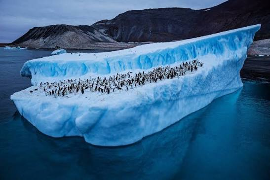
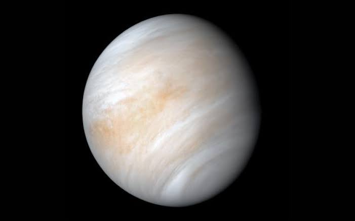
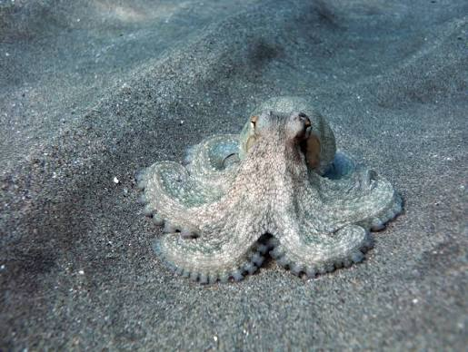
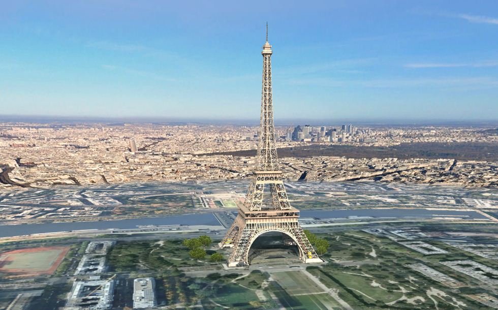

Світ сповнений дивовижних таємниць, і World Trivia допоможе тобі розгадати їх усі. Вирушай у захопливу мандрівку крізь континенти, епохи та наукові відкриття, не виходячи з дому. Кожна вікторина тут — це не просто тест на пам'ять, а можливість дізнатися щось нове завдяки зрозумілим і яскравим поясненням до кожної відповіді. Обирай рівень складності, проходь щоденні тематичні виклики та прокачуй свій кругозір щодня із задоволенням.

• Антарктида — єдиний континент на Землі, де немає жодної постійної річки. Понад 98% її території вкрито кригою, у якій зосереджено близько 70% усіх світових запасів прісної води. Попри суворий клімат, там існують підлідні озера, найбільше з яких — озеро Восток.
Англо-занзібарська війна 1896 року увійшла до Книги рекордів Гіннеса як найшвидший збройний конфлікт. Вона розпочалася о 9:02 ранку після того, як султан відмовився зректися престолу, і закінчилася вже о 9:40, коли британський флот розбив палац султана.

Венера обертається навколо своєї осі настільки повільно, що одна доба там триває 243 земні дні. Водночас повний оберт навколо Сонця планета робить за 225 земних днів. Крім того, вона обертається у зворотному напрямку порівняно з більшістю інших планет.

Два серця перекачують кров через зябра, а третє — по всьому тілу (причому під час плавання воно тимчасово зупиняється). А блакитний колір крові пояснюється тим, що замість заліза, як у людей, кисень у ній переносить білок на основі міді.

Через фізичне явище теплового розширення металу в спекотні літні дні залізна конструкція Ейфелевої вежі нагрівається і може збільшуватися у висоту до 15 сантиметрів. Взимку, коли температура падає, вежа повертається до своїх звичних розмірів.
Його винайшов американець Леві Хатчінс у 1787 році виключно для себе, щоб вчасно прокидатися на роботу. Механізм був налаштований тільки на один конкретний час — 4:00 ранку, і змінити цей показник було неможливо.
Від таємниць глибокого космосу до шедеврів світового кіно — у нас є вікторини на будь-який смак та рівень підготовки.
| Rank | Name | Score | Country | Category | Date |
|---|---|---|---|---|---|
| 1 | Олена Коваленко | 980 | Україна | Програмування | 19.11.2026 |
| 2 | Максим Бондар | 945 | Україна | Вебдизайн | 18.11.2026 |